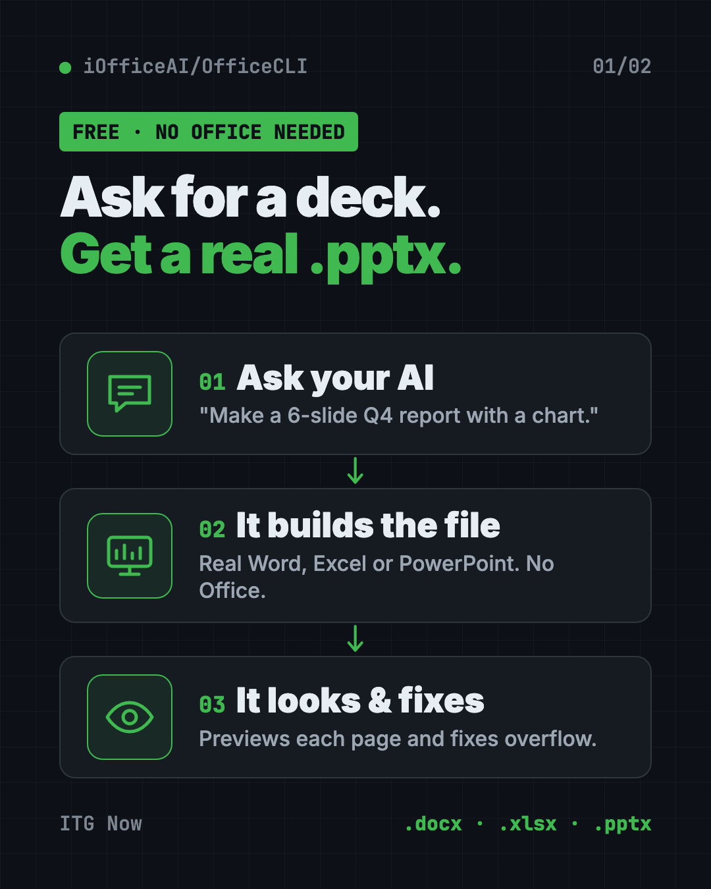
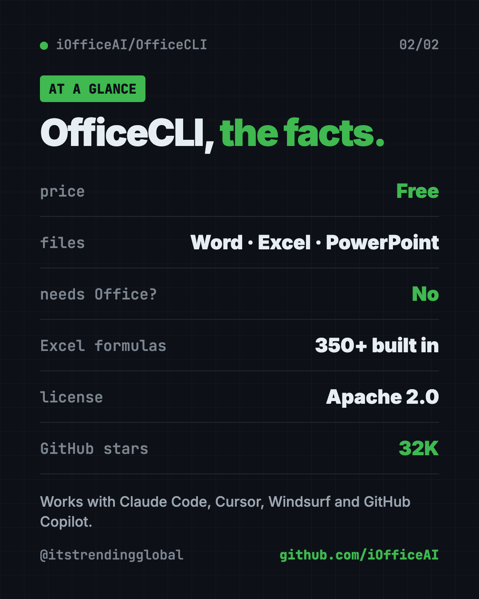
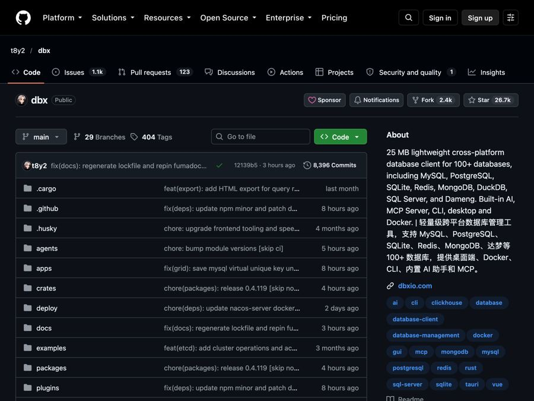
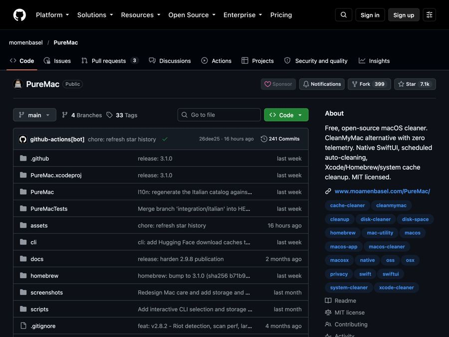
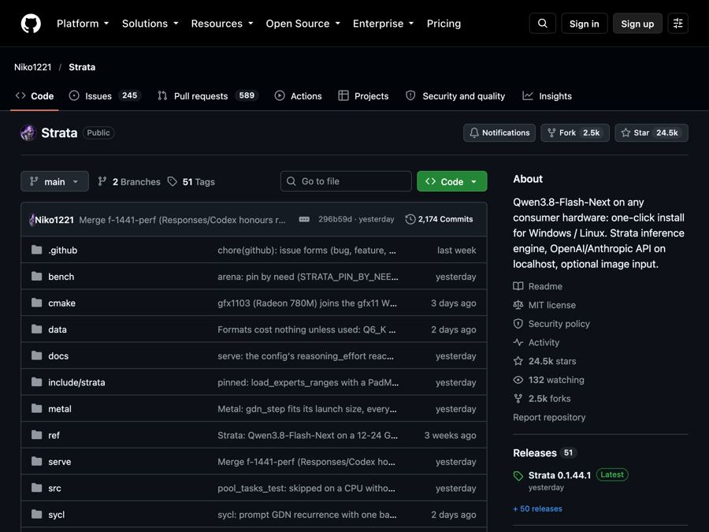

OfficeCLI: Free AI for Word, Excel and PowerPoint Files
OfficeCLI is free AI for Word, Excel and PowerPoint. It lets AI helpers create, read and edit real Office files, with no Office install needed.
OfficeCLI is free AI for Word, Excel and PowerPoint files. It gives AI helpers like Claude Code and Cursor a way to create, read and edit real Office documents, without Microsoft Office installed.
Ask your AI for a sales deck, a budget sheet or a report, and you get a real .pptx, .xlsx or .docx file. This guide explains how it works and how to set it up.
Key takeaways
- Real Office files. Word, Excel and PowerPoint, created, read and edited.
- No Office needed. It's one small program, with nothing else to install.
- The AI can "see" its work. It turns documents into web pages or pictures, so the AI can spot a title that runs off the slide.
- Free and open source. Apache 2.0 license, about 32K GitHub stars.
- Works with your AI helper. One setup command adds it to Claude Code, Cursor, Windsurf, GitHub Copilot and more.
What is OfficeCLI?
AI helpers are great at writing text. They're worse at making a real PowerPoint file. They often write messy code that sort of works, then can't check how it looks.
OfficeCLI fixes that. It's a command-line tool, meaning you control it by typing short commands. More often, your AI helper types them for you.
It can create files from scratch, read text and formulas, spot formatting problems, change anything on the page, and move content between files.
Its trick is a built-in "renderer." It draws your document as a web page or a picture. The README says this gives AI eyes: build, look, fix.
What can this AI for Word, Excel and PowerPoint do?
| File | What it handles (from the README) |
|---|---|
| Word (.docx) | Paragraphs, tables, styles, images, headers, comments, footnotes, tracked changes, table of contents |
| Excel (.xlsx) | Cells, 350+ formulas that calculate on their own, charts, pivot tables, sorting, data checks, CSV import |
| PowerPoint (.pptx) | Slides, shapes, images, tables, charts, animations, transitions, themes, speaker notes |
It also has a "merge" feature. Design a template once with {{name}} style blanks, then fill it with data again and again. Think invoices or certificates.

How to use OfficeCLI (real examples)
- Build a quarterly deck. Ask your AI helper: "Make a 6-slide Q4 report in deck.pptx with a title slide and one chart." It builds the slides and checks the look.
- Clean up a messy spreadsheet. Ask it to sort your sales sheet, add totals, and build a pivot table by region.
- Fix a Word report. Ask it to find formatting problems, make headings match, and add a table of contents.
- Make 50 invoices. Design one invoice template, then fill it from a list of clients with
officecli merge. - Pull data out of documents. Have it read a stack of files and pull the numbers into JSON, a simple data format.
💡 Tip: Run
officecli watch deck.pptxwhile your AI works. A browser preview updates live with every change, so you can see the deck take shape.
Who is OfficeCLI for?
- Office workers who build the same reports and decks every week.
- Students making slides and reports with an AI helper.
- Small businesses sending invoices, quotes or certificates.
- Developers who need to make Office files in apps or automated jobs.
Don't like typing commands? The same team makes AionUi, a desktop app that does this through normal chat. It uses OfficeCLI behind the scenes.
Is OfficeCLI free?
Yes. OfficeCLI is free and open source under the Apache 2.0 license.
You also don't need to buy Microsoft Office to use it. Your AI helper is a separate cost if it's a paid service.
How to install OfficeCLI
The simplest way is to let your AI helper install it. The README says to paste this into your AI agent's chat:
curl -fsSL https://officecli.ai/SKILL.md
The AI reads that "skill" file, which teaches it how to install OfficeCLI and use every command.
Install it yourself
On Mac or Linux, open Terminal. Copy and paste this:
curl -fsSL https://raw.githubusercontent.com/iOfficeAI/OfficeCLI/main/install.sh | bash
On Windows, open PowerShell. Copy and paste this:
irm https://raw.githubusercontent.com/iOfficeAI/OfficeCLI/main/install.ps1 | iex
Using Homebrew on a Mac? Copy and paste this:
brew install officecli
Then connect it to your AI helpers. Copy and paste this:
officecli install
This adds the officecli skill to every AI coding helper it finds, like Claude Code, Cursor and GitHub Copilot.
⚠️ Heads up: OfficeCLI checks for updates in the background. To turn that off, run
officecli config autoUpdate false.

Try it in 30 seconds
Want to see it work? Copy and paste these one at a time:
officecli create deck.pptx
officecli watch deck.pptx
A preview opens in your browser. In a second terminal window, copy and paste this:
officecli add deck.pptx / --type slide --prop title="Hello, World!"
Watch the slide appear in the browser.
Let Claude or Codex set it up for you
Claude Code and OpenAI Codex are AI helpers that can run setup steps on your computer. You paste a request, they do the work, and you approve each step.
Copy and paste this:
Please install OfficeCLI from github.com/iOfficeAI/OfficeCLI.
1. Check if I'm on Mac, Windows or Linux and use the matching install command from the README.
2. Run "officecli install" so you can use it yourself.
3. Explain each step in plain words before you run it.
4. Make a test file called hello.pptx with one title slide, then show me a preview.
Then try asking:
Use OfficeCLI to turn my notes.txt into a clean 5-slide PowerPoint, then screenshot each slide and fix anything that overflows.
Open budget.xlsx with OfficeCLI, add a totals row, and make a bar chart by month.
Make an invoice template in Word with blanks for client and total, then fill it for these 3 clients.
OfficeCLI at a glance
| Price | Free |
| Works offline | Yes, the tool runs on your computer |
| Platforms | Mac, Windows, Linux |
| License | Apache 2.0 |
| Files | Word, Excel, PowerPoint |
| Needs Microsoft Office? | No |
| Best for | Anyone who wants AI to make real Office files |
Our take
OfficeCLI solves a common AI headache: getting a real, good-looking Office file instead of a wall of text. The live preview is the standout, because the AI can check its own work.
What we like:
- One small program, no Office license needed.
- The AI can see the result and fix layout problems.
- Excel formulas calculate on their own.
- Templates you can fill again and again.
- Easy hookup to the AI helpers people already use.
What to watch for:
- It's a command-line tool. Non-coders will want an AI helper, or the AionUi app, to drive it.
- The README calls it "the world's first and the best" Office suite for AI. That's the makers' claim, not ours.
- The one-line installers run a script from the internet. Read it first if that worries you.
- Updates install in the background unless you turn that off.
Want more tools that make things for you? See Open Design for visuals and Diagram Design for charts and diagrams. For more AI add-ons like this, read our gstack guide.
FAQ
What does OfficeCLI do?
It lets AI helpers create, read and edit Word, Excel and PowerPoint files. It also turns them into web pages or pictures so the AI can check how they look.
Do I need Microsoft Office to use OfficeCLI?
No. OfficeCLI is one self-contained program. It makes real Office files without Office installed.
Is OfficeCLI free?
Yes. It's free and open source under the Apache 2.0 license.
Can Claude Code make PowerPoint slides with OfficeCLI?
Yes. Run officecli install and it adds an officecli skill to Claude Code. Then ask Claude for slides in plain English.
Can I use OfficeCLI without typing commands?
Yes. The same team makes AionUi, a desktop app where you describe what you want in plain words. It runs OfficeCLI behind the scenes.
Get OfficeCLI: github.com/iOfficeAI/OfficeCLI
Follow @gittrendingglobal on Instagram for one free, useful tool every day.
📲 Watch it on Instagram in under a minute
Keep reading

DBX: Free Database Client for 100+ Databases, With AI (2026)
DBX is a free database client that opens 100+ kinds of databases in a 25 MB app. Its AI helper turns plain English into database queries for you.

PureMac: Free CleanMyMac Alternative, No Subscription
PureMac is a free CleanMyMac alternative. It clears junk, fully uninstalls apps and finds duplicates, with no subscription, no tracking and no scare tactics.

Strata: Run Big Local AI on a Gaming PC, Free
Strata is a free installer that runs big, private local AI on a gaming PC. It sets up a large Qwen model, so your chats never leave your computer.